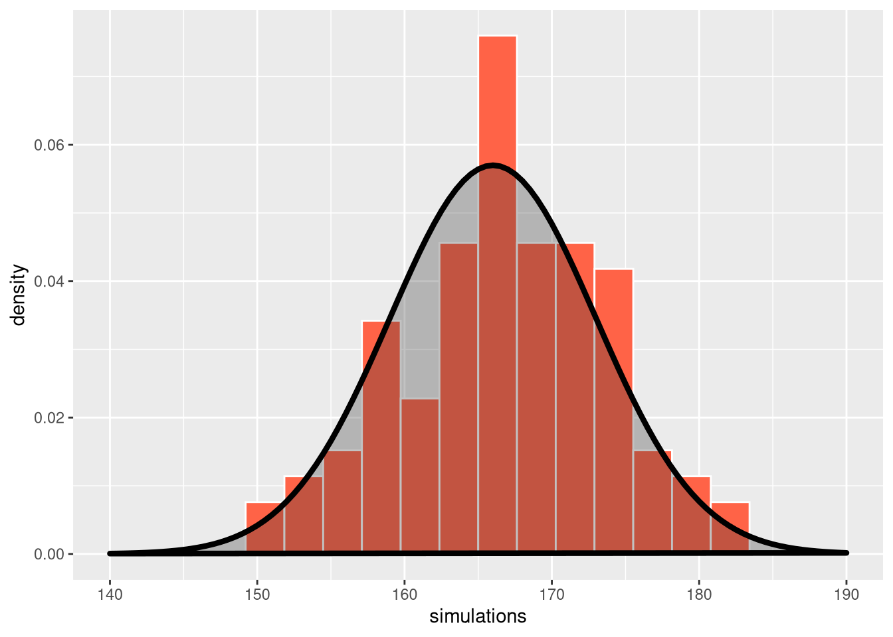
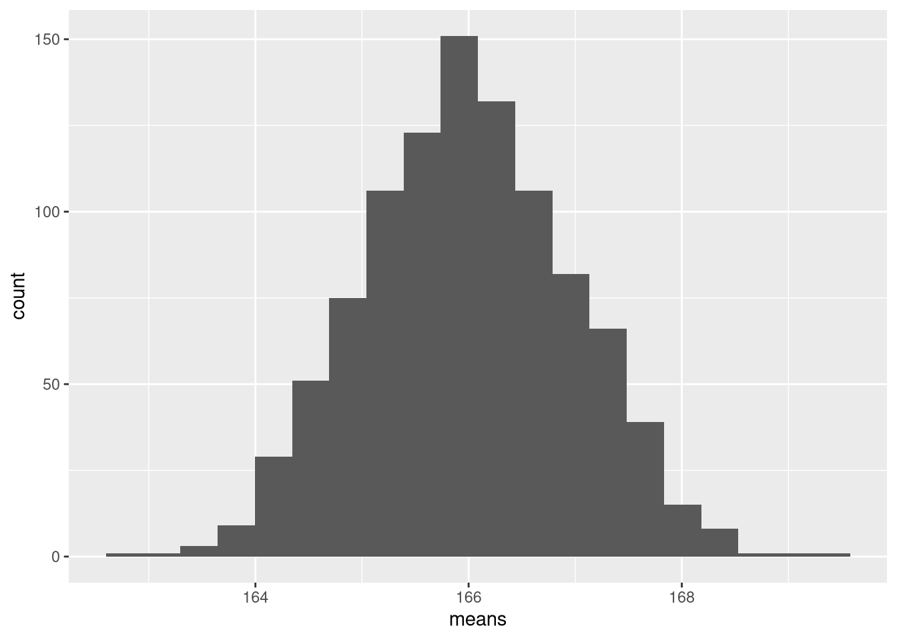
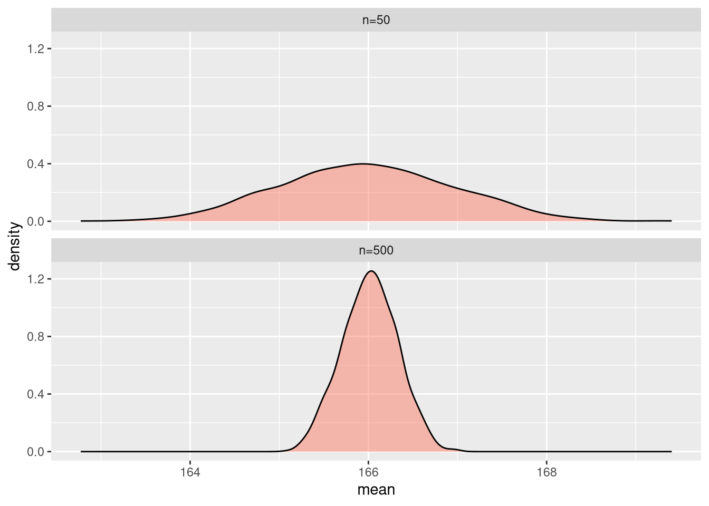

simulations <- rnorm(n = 100, mean = 166, sd = 7)Quantitative Methods and Statistics
An applied course using the R programming language
Why build statistical models?
So far, we have contented ourselves with describing the data we have. Ultimately, we are however often more interested in the processes underlying the data we see, the so called data generating process (DGP). The DGP is unobserved and possibly (probably) complex. It comprises the mechanisms we ultimately want to learn about, but also other, unexplained or unmodelled sources of variation, as well as artifacts of our data collection procedures, such as sampling variation and measurement error.
To understand this process, we need to model the DGP, typically with heavily simplified models. The ultimate goal here is to disentangle the different sources of variation that induce uncertainty into our data-based claims and inferences. Assessing (i.e., quantifying) this uncertainty is an important step because it tells us how confident we can be about our findings.
Modeling and simulating variability
Statistical models typically treat parts of the variation in an outcome variable as deterministic (e.g., explained by variation in input/predictor variables) and parts as random (i.e., ‘noise’ or unmodelled variation). To obtain a generative model of our data-generating process (i.e., one which we can use to generate or simulate data), we need to specify a probability distribution which can reasonably approximate the pattern of randomness in the unmodelled variation.
E.g., given the information that an average woman in Germany is 166cm tall, with a standard deviation of around 7cm, we might model the height measurement of a randomly picked woman as a draw from a normal distribution, one of the most commonly used probability distributions in statistical modeling. This is commonly written as:
\[ \textrm{height} \sim \textrm{Normal}(\mu = 166, \sigma = 7) \]
The tilde ~ indicates that height is treated as a random variable following the specified distribution. Keep in mind that this is just a model - it might be a good model or a bad model, but there’s no law saying that heights need to be normally distributed (although there are mathematical reasons for the ubiquity of the normal distribution related to the central limit theorem).
In a programming language like R, built-in random number generators allow us to simulate observations according to this model (i.e., to draw numbers from the corresponding normal distribution). We achieve this with the rnorm() function, drawing 100 random values with the corresponding mean and standard deviation parameters:
We can plot the density histogram of the 100 simulated women together with the probability density function of the underlying normal distribution:
library(tidyverse)df_sim <- data.frame(simulations)
ggplot(df_sim) +
geom_histogram(
aes(x = simulations, y = after_stat(density)),
bins = 20, fill = "tomato", color = "white"
) +
stat_function(
fun = dnorm,
args = list(mean = 166, sd = 7),
linewidth = 1.5, geom = "polygon",
alpha = 0.3, color = "black"
) +
lims(x = c(140, 190))
In this case, we know the exact data generating process, because we made it up ourselves and simulated the data accordingly. While this will of course not be the case in real data analysis, simulating data from a model taken to represent the true, unobserved data generating process is still a good exercise for at least two reasons:
It helps with reasoning about the model and checking its potential deficiencies by assessing the plausibility of simulations.
It lets us check how easily and precisely we could recover certain properties (such as the model parameters) from data if we didn’t know the exact DGP. This will lead us to statistical inference, which is the process of learning underlying characteristics of the DGP from data.
Probability distributions
A probability distribution exhaustively distributes a unitless quantity (‘probability’) that is normalized to an amount of 1 across a set of outcomes of a process which we regard as random. The quantity allocated to a specific outcome is taken to represent how likely that specific outcome is to occur. We could construct distributions by hand, but more typical is the use of a mathematical rule for distributing probability, such as encoded in the normal distribution used above. These rules typically have parameters which influence the distributional behavior, such as the symmetry or spread of the probability assigned to all possible events.
The normal distribution is just one of many parametric families of probability distributions that are used in statistical models. Distributions are usefully distinguished by whether they model categorical, discrete, or continuous (or even vector-valued) random variables, whether there are constraints on their support (the range of values with non-zero probability under the distribution), or their shape (e.g., whether they have ‘fat tails’, or are symmetric or multimodal).
Here is an overview of some common distributions and their characteristics:
| Distribution | Data type | Support | Parameters |
|---|---|---|---|
| Normal | Continuous | \(\mathbb{R} \quad (-\infty, \infty)\) | \(\mu\) (location) \(\sigma\) (scale) |
| Student-t | Continuous | \(\mathbb{R} \quad (-\infty, \infty)\) | \(\nu\) (df) \(\mu\) (location) \(\sigma\) (scale) |
| Exponential | Continuous | \([0,\infty)\) | \(\lambda\) (rate) |
| Beta | Continuous | \((0,1)\) | \(\mu\) (mean) \(\phi\) (precision) |
| Binomial | Discrete | \(\{0,\dots,n\}\) | \(n\) (trials) \(\theta\) (success prob) |
| Poisson | Discrete | \(\mathbb{N}_0 \quad \{0, 1, 2, ...\}\) | \(\lambda\) (mean) |
| Negative Binomial | Discrete | \(\mathbb{N}_0 \quad \{0, 1, 2, ...\}\) | \(\mu\) (mean) \(\phi\) (scale) |
| Bernoulli | Categorical | \(\{0,1\}\) | \(\theta\) (success prob) |
| Categorical | Categorical | \(\{1,\dots,K\}\) | \(\theta_1,\dots,\theta_K\) (category probs) |
Equipped with a specific mathematical rule representing a distribution family (such as the normal distribution), we (or rather R) can do many useful things with it, for example:
Generate random values (i.e., sampling) from the distribution
Compute the probability of specific events (e.g., the event that a randomly drawn woman is taller than 180cm)
Compute quantiles of the distribution (e.g., the height so that there’s a 50% chance that a random person is taller)
Probability theory is an incredibly rich but also notoriously tricky topic for study. Given the applied scope of this class, we will not delve too deep, as even only basic probability theory can easily fill a full semester. Nevertheless, much can already be achieved with only a rudimentary and more intuitive than technical understanding of what’s going on, and we will pick out what we need as we go along.
Exercises
- Specify a model of heights for a population consisting of both men and women, using the fact that that the average man in Germany is 178cm tall. Write it down in notation.
- Simulate 100 men and 100 women from the model and visualize the data alongside the underlying distributions.
- Make up a simple model for some outcome that is of interest to you / that you’re knowledgeable about by picking a distribution and specifying parameters. Check the data that the model produces for plausibility.
Statistical inference
Above, we have seen a first example of how to use probability distributions as generative models of the randomness inherent to the data generating processes underlying observable outcomes of interest. In the case of simulation, what we have to begin with is a model, and the ultimate goal is to simulate data from it. In statistics, however, we typically want to go the other way: What we have is data and what we want to do is to use it to learn something about the underlying, latent DGP (this is sometimes called the inverse problem).
In the heights example, e.g., we would typically not know the mean and the standard deviation of heights in a large population. Instead, we would have to infer them from data. In this case, the quantities of interest (the mean and the standard deviation) relate directly to (unknown) parameters in our probability model, which we can estimate based on data. This amounts to finding the parameter values based on which the fit between our model and the observed data is best. In this simple case, the best-fitting parameters turn out to be just the empirical mean and standard deviation of the data:
mean(simulations)[1] 166.8506sd(simulations)[1] 6.822762We can see that while the observed mean and SD are close to the values of 166 and 7 specified when we simulated the data, the are not exactly the same due to the randomness inherent to the DGP.
Sources of uncertainty
The data we have typically doesn’t represent the full population about which we would like to say something. It might be difficult, for example, to measure the heights of more than 40 million women in Germany. Luckily, this is typically also not necessary. Under certain conditions, we can get a very good approximiation of population characteristics by looking at only a (comparatively) small sample. The simplest way to get a sample which is representative of the underlying population is to pick units randomly (this might be easier said than done, as it might be difficult to circumvent selection biases).
While random sampling ensures a representative sample, it also produces uncertainty in our estimates: Every time you would pick a different random set of participants, you would get a slightly different result. We can again use simulation to better understand this process. First, let’s simulate a large population of individuals (say, 100 000 women):
set.seed(123) # for reproducible RNG
pop <- rnorm(n = 100000, 166, 7)
mean(pop)[1] 166.0068The ‘true’ mean in this population is 166.0068. Now, draw 50 people randomly from that population (without replacement, i.e., we can only draw everybody once):
samp <- sample(pop, 50, replace = FALSE)Finally, compute the sample mean:
mean(samp)[1] 166.5651The mean we get from the sample is close to the population mean, but not the same, as we saw before. Infinitely drawing samples and computing some summary would yield the sampling distribution of that summary.
To get a sense of the sampling distribution of the mean, we can repeat this process many (e.g., 1000) times, each time recording the mean and then looking at the distribution of means that we get from our replicated samples:
means <- replicate(1000, mean(sample(pop, 50, replace = FALSE)))We can again visualize the sampling distribution we get like this with a histogram:
ggplot(data.frame(means), aes(x = means)) +
geom_histogram(bins = 20)
The standard deviation of the sampling distribution is called the standard error, and summarizes the variability of an estimate (here, the sample mean):
sd(means)[1] 0.9731581You can also see that the sampling distribution looks suspiciously like a normal distribution, and in many (but not all) cases the sampling distribution can indeed be treated as (approximately) normal, as per the central limit theorem.
One of the most important basic principles of statistics is that the variability in an estimate will decrease with more data. We can again establish that fact by simulation. Compare the standard error above to the standard error we get when we draw samples of 500 simulated women instead of 50:
means500 <- replicate(1000, mean(sample(pop, 500, replace = FALSE)))Let’s visualise the two sampling distributions together (using a density plot, which is just a fancy, smooth histogram):
df_sd <- data.frame(
sampsize = factor(rep(c("n=50", "n=500"), each = 1000)),
mean = c(means, means500)
)
sd(means500)[1] 0.3113594ggplot(df_sd, aes(mean)) +
geom_density(fill = "tomato", alpha = 0.4) +
facet_wrap(~sampsize, nrow = 2)
As expected, the standard error for the larger sample is much lower than for the smaller sample.
While drawing random samples from a larger population is common (especially in social sciences), it is not the only source of this kind of variability. In many cases where one effectively observes the full population (consider, e.g., a survey in an an organization where almost everybody participated), it still makes sense to think about and model variability, as there are other sources of randomness in data collection. Measurement is often difficult and imprecise and subject to error and fluctuations, which in absence of better explanations needs to be considered as random. The basic principle is the same: The precise data are considered random and thus uncertain, and we need to propagate that uncertainty to the quantities of interest that we compute from the data to draw inferences about the underlying population or process.
In real-world settings, quantifying uncertainty by repeatedly compiling new datasets is not sensible - the whole purpose of quantifying uncertainty is to allow inferences from limited data! Instead we rely on assumptions about the DGP combined with different estimation procedures to obtain summaries of uncertainty based on a single dataset. This is a large and complex topic in statistics and there are competing approaches, some of which will be discussed in more detail in this class.
Aleatoric and epistemic uncertainty
We have now seen two ways in which our inferences can be uncertain:
There is variation not explained by our model but instead assumed to be random. In our example, this is represented by the variability in the normal distribution (measured by the \(\sigma\) parameter, i.e., the distribution’s standard deviation). Our model is just not powerful enough to reason about why different women have different heights; For this, we would need a better model. This kind of systemic uncertainty in our predictions about any specific outcome is called aleatoric uncertainty (alea is Latin for dice).
Next to the intrinsic uncertainty of our model, there is uncertainty coming from the limited availability / precision of the data. The sampling uncertainty in the unknown parameters discussed above falls into this category. We call this uncertainty epistemic uncertainty. As we have seen, and unlike aleatoric uncertainty, this can be reduced by gathering more data, as our estimates become more and more precise.
Exercises
- Simulate a large population for the model you made up before.
- Repeatedly draw samples of 10, 100, and 1000 individuals and compute the sampling distribution of the mean (or another quantity of interest).
- Describe and visualize the sampling distribution.